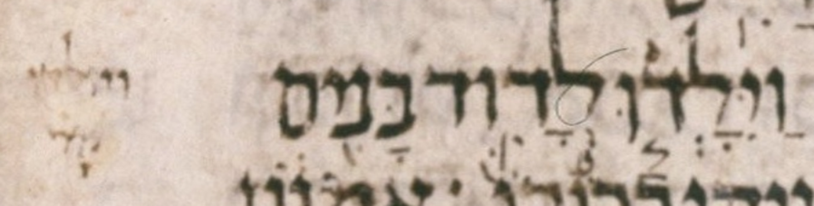

| n | 23 |
| citation:book | 2Sam |
| citation:c | 3 |
| citation:v | 2 |
| citation:position | 1 |
| author:name | Ben Denckla |
| author:mail | bdenckla@alum.mit.edu |
| author:confirmed | true |
| description | Note that while creating the pointed qere, the transcriber added a dagesh to vav-qamats |
| lc:folio | Folio_ |
| lc:column | 0 |
| lc:line | 0 |
| lc:credit | Credit: Sefaria.org. |
| reftext | וַיִּוָּלְד֧וּ |
| refuni | vav patah yod dagesh hiriq vav dagesh qamats lamed sheva dalet darga vav dagesh |
| changetext | וַיִּוָּלְד֧וּ |
| changeuni | vav patah yod dagesh hiriq vav dagesh qamats lamed sheva dalet darga vav dagesh |
| notes:note | The manuscript’s pointed ketiv (MPK) is וַיִּאָׄלְד֧וּ. (We use אׄ (א with an extraordinary upper dot) to stand in for a blank space.) |
| notes:note:2 | The MPK has no letter to carry a dagesh for the qere’s וָּ. |
| notes:note:3 | Unlike the dagesh, the qamats does not need a letter to carry it; it is allowed to be an orphan. It appears between the ḥiriq and the sheva (of the yod and ל respectively). Unlike the manuscript, our MPK shows that orphan qamats on a אׄ (א with an extraordinary upper dot). |
| transnotes:transnote:action | Add |
| transnotes:transnote:type | a |
| transnotes:transnote:beforetext | XXX fill me in beforetext |
| status | Pending |
| type | NoTextChange |